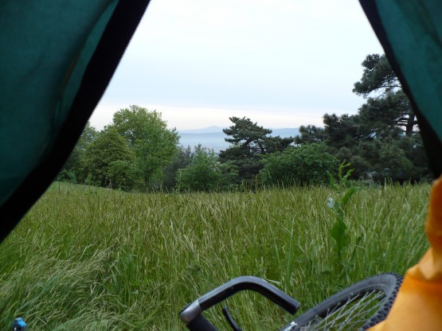
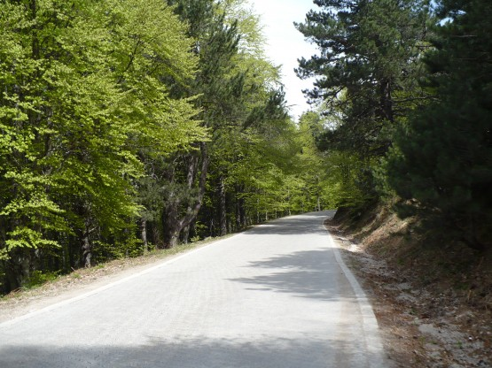
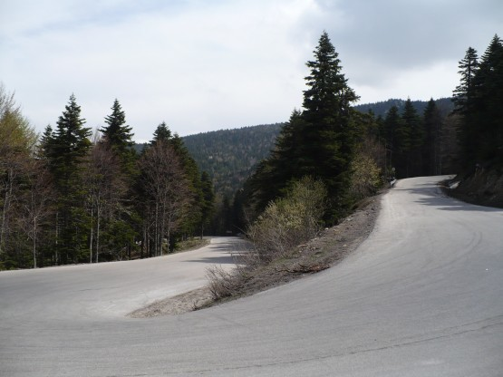
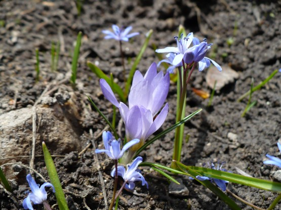
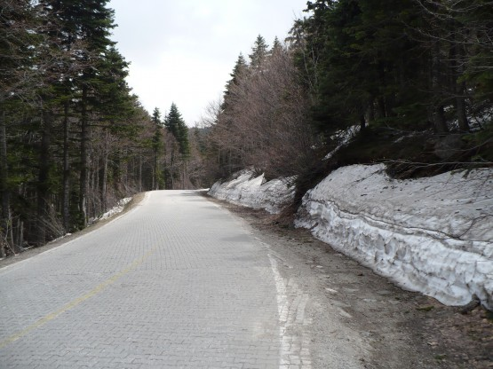
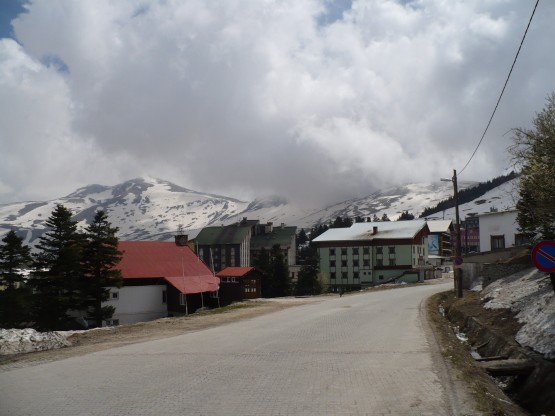
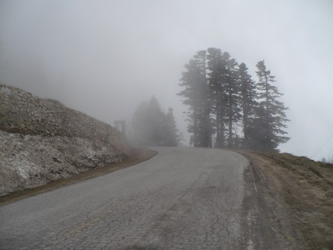

24 апреля
Утро. Непривычно прохладно. Сразу бросается в глаза сочная зелень окружающая палатку.
Вечно зеленая Бурса.

Быстро собираюсь, впереди подъем почти 2 километра по высоте. Выкатываю велосипед с поляны и вдруг сначала слышу, а потом и вижу, как нечто большое катится прямо на меня по склону. Вернее я не вижу, что это такое, зато вижу, как трясутся и трещат кусты на его пути. Наверное, здоровенный камень катится под гору, догадываюсь я. Вроде мимо пролетит. . . Из кустов на поляну вылетает пес в холке с мой велосипед. Сильно удивляюсь. Он удивляется не меньше моего, останавливается, так что задние ноги по инерции улетают вперед, разворачивается и бежит обратно, в кусты и дальше вверх по склону, точно с таким же шумом.
Перевариваю. Шум повторяется и опять приближается, вроде даже громче стало. . .
На поляну выбегают три пса, одинаковы с лица. Внимательно смотрим друг на друга. Сбегал за пацанами. . . Все трое разворачиваются и убегают. За все время никто, включая меня, не гавкнул.
**
О турецких собаках.
Опять напрашивается сравнение России и Турции. Собак в Турции много. У меня сложилось ощущение, что количество крупных собак прямо пропорционально количеству заборов с колючей проволокой. Так вот этого добра и у нас и турок много, к сожалению.
Начинаю подъем, размышляю о том, как они не обдирают себе бока, носясь через кусты с такой скоростью. Места кругом живописные. Дорога идет все время вверх, не круто но непрерывно. Прямо на глазах меняется растительность.
Хвойные леса Улудага.

Машин очень мало, асфальт приличный, что еще надо?

Растительность напоминает нашу, в воздухе запах весны, журчат ручьи, распускаются почки. За пару часов проделываешь путь из лета в зиму.

А вот и снег.

Встречные машины особенно подолгу приветствуют меня. Наверное им кажется, что я делаю нечто из ряда вон выходящее. А я просто получаю удовольствие от этого очень необычного и красивого подъема.
Но все заканчивается. 30 километров подъема, 1800 с чем то там метров над уровнем моря и дорога упирается в горнолыжный курорт Улудаг.
Улудаг.

Запустение, Не сезон. Разве, что ставни не хлопают на ветру. На северном склоне много снега, местные дети катаются на санках. Хотел было подняться еще выше, но неожиданно, как это бывает только в горах, все затягивает туманом, точнее это облака накрывают все кругом.
В облаках.

Погода портится, пора вниз. Спускаюсь меньше, чем за час, доезжаю почти до моря, стем, чтобы завтра сесть на паром до Истамбула. Да, не зря я так хотел на Улудаг!